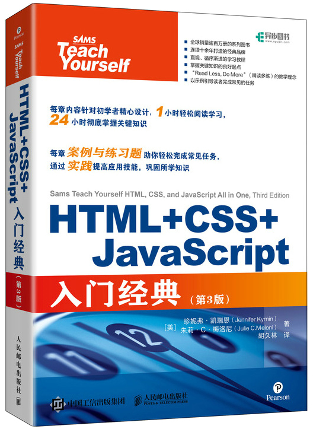

首页 > 书籍下载
《HTML+CSS+JavaScript入门经典 第3版》PDF下载（高清完整版）
|  | 作者：[美]珍妮弗 |
| 译：胡久林 | |
| 出版时间：2021年06月01日 | |
| 出版社：人民邮电出版社 | |
| ISBN：9787115559760 | |
| 总页数：615 |
这是一本介绍 HTML、CSS 和 JavaScript 的入门级图书，本书全面地介绍了 Web 前端开发的基础知识，并结合大量的实践，帮助读者循序渐进地学习 Web 前端设计及开发。这本书非常适合 Web 前端开发工作者，尤其是想全面学习 HTML、CSS 和 JavaScript 的读者。
这里提供的是《HTML+CSS+JavaScript入门经典 第3版》的高清 PDF 下载，内容完整，附带目录标签。
这本书共分为6个部分，除了介绍 Web 前端的基础知识和基本工作原理外，还讲述了响应式 Web 设计、移动优先以及媒体查询等知识，对表单制作、如何全面地组织和管理网站也做了详细的介绍。全书内容非常全面，相信我们跟着它一起学习，一定会有意想不到的收获！
一位购买了这本书的读者是这样评价的：
很详细，详细到教你怎么打开文件，超级适合新手。
还有一位读者是这样说的：
这本书内容很好，也非常全面，小白也能看得懂，只是因为翻译的原因，语言上稍稍有些难理解，不过不影响学习。
书籍目录
- 第1课 深入理解Web工作原理
- 1.1 HTML和万维网简史 4
- 1.2 创建Web内容 4
- 1.3 理解Web内容传递 5
- 1.4 选择Web托管提供商 7
- 1.5 使用多种Web浏览器和设备进行测试 8
- 1.6 创建示例文件 9
- 1.7 使用FTP传输文件 10
- 1.8 Web服务器放置文件的位置 13
- 1.9 在没有Web服务器的情况下分发内容 15
- 1.10 测试Web内容的建议 16
- 1.11 总结 17
- 1.12 问与答 17
- 1.13 实践 18
- 1.14 练习 19
- 第2课 构建HTML文档
- 2.1 准备工作 21
- 2.2 简单网页入门 21
- 2.3 网页必要的HTML标签 24
- 2.4 用段落和换行符组织页面 26
- 2.5 用标题组织内容 28
- 2.6 理解语义元素 31
- 2.7 多种方式使用 35
- 2.8 理解元素 37
- 2.9 使用 38
- 2.10 实现元素 38
- 2.11 何时使用 39
- 2.12 有效地使用 40
- 2.13 总结 41
- 2.14 问与答 42
- 2.15 实践 42
- 2.16 练习 44
- 第3课 理解层叠样式表
- 3.1 CSS是如何工作的 45
- 3.2 基本样式表 47
- 3.3 CSS样式入门 52
- 3.4 使用样式类 56
- 3.5 使用样式ID 57
- 3.6 内部样式表和内联样式 58
- 3.7 总结 60
- 3.8 问与答 61
- 3.9 实践 61
- 3.10 练习 62
- 第4课 理解JavaScript
- 4.1 Web脚本基础 64
- 4.2 JavaScript如何应用于网页 65
- 4.3 探索JavaScript的功能 68
- 4.4 使用JavaScript显示时间 69
- 4.5 测试脚本 71
- 4.6 总结 75
- 4.7 问与答 75
- 4.8 实践 76
- 4.9 练习 78
- 第5课 验证和调试代码
- 5.1 验证HTML和CSS代码 79
- 5.2 使用开发者工具调试HTML和CSS代码 81
- 5.3 使用开发者工具调试JavaScript代码 92
- 5.4 总结 96
- 5.5 问与答 97
- 5.6 实践 97
- 5.7 练习 98
- 第6课 使用字体、文本块、列表和表格
- 6.1 使用特殊字符 102
- 6.2 粗体、斜体和特殊文本格式 105
- 6.3 调整字体 107
- 6.4 使用Web字体 111
- 6.5 对齐页面上的文本 113
- 6.7 列表嵌套 118
- 6.8 创建简单表格 122
- 6.9 控制表格大小 126
- 6.10 表格内的对齐和跨距 128
- 6.11 带表格的页面布局 131
- 6.12 使用CSS columns 132
- 6.13 总结 135
- 6.14 问与答 136
- 6.15 实践 137
- 6.16 练习 138
- 第7课 使用外部和内部链接
- 7.1 使用网址 139
- 7.2 使用页面内锚链接 142
- 7.3 链接到自己的Web内容 145
- 7.4 链接到非HTML文件 147
- 7.5 链接到外部Web内容 148
- 7.6 链接到电子邮箱地址 149
- 7.7 在浏览器新窗口中打开链接 150
- 7.8 为链接赋予标题 151
- 7.9 使用CSS设置超链接样式 151
- 7.10 有效地使用链接 154
- 7.11 总结 155
- 7.12 问与答 156
- 7.13 实践 157
- 7.14 练习 158
- 第8课 使用颜色、图像和多媒体
- 8.1 选择颜色的最佳实践 160
- 8.2 了解网页颜色 161
- 8.3 使用十六进制值表示颜色 163
- 8.4 使用RGB和RGBa值表示颜色 164
- 8.5 使用CSS设置背景、文本和边框颜色 165
- 8.6 选择图像软件 167
- 8.7 图像必备知识 168
- 8.8 准备摄影图像 169
- 8.9 创建横幅和按钮 174
- 8.10 减少或删除颜色以优化图像 175
- 8.11 创建平铺背景图像 176
- 8.12 在网页上放置图像 177
- 8.13 用文本描述图像 179
- 8.14 指定图像高度和宽度 180
- 8.15 对齐图像 181
- 8.16 将图像转换为链接 184
- 8.17 使用背景图像 187
- 8.18 使用图像映射 188
- 8.19 链接多媒体文件 190
- 8.20 嵌入多媒体文件 193
- 8.21 使用多媒体的附加提示 197
- 8.22 总结 198
- 8.23 问与答 199
- 8.24 实践 200
- 8.25 练习 201
- 第9课 使用外边距、内边距、对齐和浮动
- 9.1 使用外边距 205
- 9.2 内边距元素 212
- 9.3 保持对齐 215
- 9.4 内容块居中 216
- 9.5 理解float属性 216
- 9.6 总结 219
- 9.7 问与答 219
- 9.8 实践 219
- 9.9 练习 221
- 第10课 理解CSS盒子模型和定位
- 10.1 CSS盒子模型 222
- 10.2 更改盒子模型 225
- 10.3 整体定位 226
- 10.4 控制层叠顺序 230
- 10.5 管理文本流 232
- 10.6 总结 233
- 10.7 问与答 233
- 10.8 实践 234
- 10.9 练习 235
- 第11课 使用CSS对列表、文本和导航进行更多操作
- 11.1 HTML列表刷新器 236
- 11.2 CSS盒子模型如何作用于列表 237
- 11.3 放置列表项指示符 240
- 11.4 使用列表项和CSS创建图像映射 241
- 11.5 导航列表与常规列表的区别 245
- 11.6 使用CSS创建垂直导航 245
- 11.7 使用CSS创建水平导航 253
- 11.8 总结 257
- 11.9 问与答 257
- 11.10 实践 258
- 11.11 练习 259
- 第12课 使用现代CSS技术创建布局
- 12.1 准备进行页面布局 261
- 12.2 移动设备优先的重要性 261
- 12.3 理解固定布局 262
- 12.4 理解流式布局 264
- 12.5 创建固定/流式混合布局 266
- 12.6 使用现代CSS布局技术 275
- 12.7 总结 286
- 12.8 问与答 286
- 12.9 实践 287
- 12.10 练习 288
- 第13课 控制背景和边框
- 13.1 了解背景和边框 289
- 13.2 使用多个边框和背景 290
- 13.3 使用被遗忘的背景属性 294
- 13.4 使用渐变作为背景 299
- 13.5 将HTML元素的边角四舍五入 304
- 13.6 使用图像作为边框 305
- 13.7 理解CSS轮廓 309
- 13.8 总结 310
- 13.9 问与答 310
- 13.10 实践 311
- 13.11 练习 312
- 第14课 使用CSS转换和过渡
- 14.1 理解CSS二维转换 313
- 14.2 三维转换元素 321
- 14.3 使用CSS转换 322
- 14.4 使用JavaScript触发转换 324
- 14.5 总结 325
- 14.6 问与答 326
- 14.7 实践 326
- 14.8 练习 327
- 第15课 使用CSS和Canvas制作动画
- 15.1 理解CSS动画 328
- 15.2 使用CSS Canvas 335
- 15.3 在CSS动画和Canvas动画之间选择 347
- 15.4 总结 347
- 15.5 问与答 348
- 15.6 实践 348
- 15.7 练习 349
- 第16课 理解响应式Web设计的重要性
- 16.1 响应式Web设计 353
- 16.2 渐进式增强 356
- 16.3 为响应式Web设计编写HTML代码 359
- 16.4 验证HTML、CSS和JavaScript代码 361
- 16.5 总结 362
- 16.6 问与答 362
- 16.7 实践 363
- 16.8 练习 364
- 第17课 为移动设备设计
- 17.1 移动设备网页设计 365
- 17.2 理解移动优先设计 372
- 17.3 使用响应式表格和图像 375
- 17.4 无须媒体查询即可创建响应式布局 382
- 17.5 除响应式Web设计外的其他移动设计方案 384
- 17.6 总结 386
- 17.7 问与答 386
- 17.8 实践 386
- 17.9 练习 387
- 第18课 使用媒体查询和断点
- 18.1 什么是媒体查询 388
- 18.2 使用媒体查询表达式 392
- 18.3 什么是断点 393
- 18.4 如何在CSS中定义断点 393
- 18.5 最佳断点 398
- 18.6 总结 398
- 18.7 问与答 399
- 18.8 实践 399
- 18.9 练习 400
- 第19课 理解动态网站和HTML5应用程序
- 19.1 了解不同类型的脚本 403
- 19.2 在HTML文件中引入JavaScript代码 404
- 19.3 显示随机内容 406
- 19.4 理解文档对象模型 409
- 19.5 基于用户交互更改图像 412
- 19.6 关于开发HTML5应用程序的思考 414
- 19.7 总结 415
- 19.8 问与答 415
- 19.9 实践 415
- 19.10 练习 419
- 第20课 JavaScript编程入门
- 20.1 基本概念 420
- 20.2 JavaScript语法规则 426
- 20.3 使用注释 426
- 20.4 JavaScript的最佳实践 427
- 20.5 了解JSON 428
- 20.6 总结 428
- 20.7 问与答 429
- 20.8 实践 429
- 20.9 练习 431
- 第21课 使用文档对象模型
- 21.1 理解文档对象模型 432
- 21.2 使用window对象 433
- 21.3 使用document对象 433
- 21.4 使用history对象 436
- 21.5 使用location对象 438
- 21.6 有关DOM结构的详细信息 439
- 21.7 使用DOM节点 440
- 21.8 创建可定位元素/层 442
- 21.9 隐藏和显示对象 447
- 21.10 修改页面中的文本 448
- 21.11 向页面添加文本 449
- 21.12 总结 451
- 21.13 问与答 451
- 21.14 实践 452
- 21.15 练习 454
- 第22课 使用JavaScript变量、字符串和数组
- 22.1 使用变量 456
- 22.2 理解表达式和运算符 458
- 22.3 JavaScript中的数据类型 459
- 22.4 在数据类型之间转换 460
- 22.5 使用字符串对象 461
- 22.6 使用子字符串 463
- 22.7 使用数值数组 465
- 22.8 使用字符串数组 467
- 22.9 对数值数组排序 468
- 22.10 使用函数 470
- 22.11 介绍对象 475
- 22.12 使用对象简化脚本 476
- 22.13 扩展内置对象 480
- 22.14 使用Math对象 482
- 22.15 使用Math方法 483
- 22.16 使用日期 485
- 22.17 总结 487
- 22.18 问与答 487
- 22.19 实践 488
- 22.20 练习 490
- 第23课 用条件和循环控制流
- 23.1 if语句 492
- 23.2 使用简写条件表达式 494
- 23.3 使用if和else测试多个条件 495
- 23.4 使用switch表示多个条件 497
- 23.5 使用for循环 499
- 23.6 使用while循环 501
- 23.7 使用do…while循环 501
- 23.8 使用循环 502
- 23.9 通过对象属性循环 503
- 23.10 总结 506
- 23.11 问与答 506
- 23.12 实践 506
- 23.13 练习 508
- 第24课 响应事件和使用window对象
- 24.1 理解事件处理程序 510
- 24.2 使用鼠标事件 514
- 24.3 使用键盘事件 517
- 24.4 使用load和unload事件 519
- 24.5 使用click事件更改元素的样式 520
- 24.6 用对象控制窗口 526
- 24.7 移动和调整窗口大小 530
- 24.8 使用超时 531
- 24.9 显示对话框 533
- 24.10 总结 535
- 24.11 问与答 535
- 24.12 实践 536
- 24.13 练习 538
- 第25课 JavaScript最佳实践
- 25.1 编写最佳实践脚本 539
- 25.2 获取浏览器信息 548
- 25.3 跨浏览器脚本 551
- 25.4 支持禁用JavaScript的浏览器 552
- 25.5 创建一个不引人注目的脚本 554
- 25.6 总结 556
- 25.7 问与答 557
- 25.8 实践 557
- 25.9 练习 559
- 第26课 使用第三方JavaScript库和框架
- 26.1 使用第三方JavaScript库 560
- 26.2 使用第三方库添加JavaScript效果 564
- 26.3 使用JavaScript框架 566
- 26.4 总结 567
- 26.5 问与答 568
- 26.6 实践 568
- 26.7 练习 570
- 第27课 使用基于Web的表单
- 27.1 HTML表单如何工作 573
- 27.2 创建表单 574
- 27.3 接受文本输入 579
- 27.4 表单数据 580
- 27.5 标记表单数据 580
- 27.6 分组表单元素 581
- 27.7 浏览表单输入控件 582
- 27.8 使用HTML5表单验证 589
- 27.9 提交表单数据 591
- 27.10 使用JavaScript访问表单元素 593
- 27.11 总结 595
- 27.12 问与答 597
- 27.13 实践 597
- 27.14 练习 600
- 第28课 组织和管理网站
- 28.1 单个页面 602
- 28.2 组织一个简单的网站 603
- 28.3 组织更大的网站 604
- 28.4 为搜索引擎优化网站 606
- 28.5 编写可维护代码 608
- 28.6 关于版本控制的思考 610
- 28.7 使用HTML和CSS框架 612
- 28.8 总结 612
- 28.9 问与答 613
- 28.10 实践 613
- 28.11 练习 615
书籍下载
一键登录，免费下载完整版 PDF，文件名称：《HTML+CSS+JavaScript入门经典 第3版》.pdf